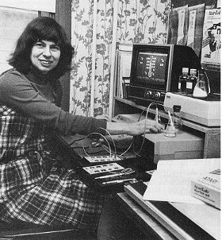
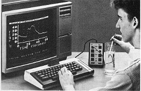

AtariLab
The home computer became a scientific instrument when a physics professor plugged a thermistor into the joystick port.

Overview
AtariLab was an educational hardware/software system released by Atari, Inc. in late 1983 that transformed the Atari 8-bit home computer into a real-time scientific data acquisition instrument. The system consisted of a breakout box that plugged into the Atari's joystick port and accepted colour-coded RCA-jack sensor probes — a thermistor-based temperature probe (Starter Set, $89.95) and a photoresistor-based light probe (Light Module, $49.95). The Atari's POKEY chip, originally designed to measure paddle controller position by timing capacitor charging rates, was repurposed to digitize analog sensor readings. Students could measure real-world physical phenomena — a cooling curve of hot water, the friction of rubbing a surface, the temperature of their own skin — and see the results plotted as real-time strip charts, digital thermometers, and animated graphs on a CRT television. A 144-page manual provided over 100 experiments.
The system was the brainchild of Dickinson College physics professor Priscilla Laws, who envisioned the home computer as an affordable laboratory instrument. The software was programmed by 15-year-old middle-school student David Egolf (who later earned a physics PhD from Duke). Atari product manager Leslie Wolf shepherded the project through Atari's Learning Systems division. A Commodore 64 version was completed, and an Apple II port was underway.
AtariLab was killed in July 1984 when Warner Communications sold Atari to Jack Tramiel. Planned modules — Biofeedback (galvanic skin response, heart rate), Motion (ultrasonic sensor), pH, Mechanics, Crimelab, and Robotics — were cancelled. Only small numbers of the Temperature and Light modules shipped commercially. However, the concept survived: Laws later co-developed the Universal Laboratory Interface (ULI) for IBM PCs, manufactured by former Atari colleague Ron Budworth and sold through Vernier Software & Technology, which sold approximately 40,000 units and became the dominant force in science-education probeware.
Deep dive
At the hardware level, AtariLab was a brilliant repurposing of existing consumer electronics. The Atari 8-bit computer's POKEY chip included eight potentiometer (paddle) input lines. Each line worked by timing how long a capacitor took to charge through a variable resistor — in a game controller, this was a potentiometer attached to a paddle knob. AtariLab replaced the potentiometer with a thermistor or photoresistor: as temperature or light changed, the resistance changed, the capacitor charging time changed, and the POKEY chip reported a different value (0–228 in the POT registers). In Atari BASIC, accessing a sensor was as simple as reading PADDLE(2). The colour-coded RCA jacks on the breakout box and matching probes made the system physically legible — no calibration needed, just match the colours and plug in. The interface box also provided joystick-trigger digital inputs and a tap from the computer's +5V power rail, with a red LED to show power status. It was, in essence, an Arduino sensor shield for a 1983 game console.
The pedagogical insight behind AtariLab was temporal: traditional school labs required students to take manual measurements, graph them on paper, and analyze results long after the experiment ended — a 15–20 minute gap that broke the connection between action and understanding. AtariLab collapsed this to real-time. A student dipped the temperature probe in hot water and watched a cooling curve draw itself on screen. They could immediately ask 'what if I add ice?' and watch the curve change. Multiple experiments could be run in a single class period, enabling genuine hypothesis testing. This 'computer as laboratory partner' model was later formalized as microcomputer-based laboratories (MBL), a paradigm that now dominates science education worldwide.
The software for both shipped modules was written by David Egolf, a 15-year-old middle-school student in Carlisle, Pennsylvania — the same town as Dickinson College. Laws discovered Egolf's programming talent and recruited him. He coded the Temperature and Light module software, including the graphical displays, data logging, and experiment frameworks. The software won the 1984 Software of the Year Award from Classroom Computer Learning magazine. Egolf went on to earn a PhD in physics from Duke University and became an associate professor at Georgetown University. His story — a teenager writing production scientific software for a major corporation — captures the era's unusual openness and the proximity of amateur skill to professional opportunity in early microcomputing.
On July 1, 1984, Warner Communications — hemorrhaging over $1 million per day from the video game crash — sold Atari to Jack Tramiel for $50 in cash and $240 million in promissory notes. The AtariLab team was laid off. Product manager Leslie Wolf recalled telling the manufacturing team: 'They don't know you're here. Keep working until you don't get a paycheck anymore.' A small number of Atari 8-bit and Commodore 64 units were pressed; the Apple II version was abandoned. But Priscilla Laws did not stop. She had seen what home-computer sensing could do for education. She partnered with Ron Thornton (Tufts University) and Robert Tinker (TERC) to develop Workshop Physics, a calculus-based curriculum with no lectures — entirely lab-based. Laws contacted former Atari colleague Ron Budworth, who designed a new analog interface called the Universal Laboratory Interface (ULI) for the IBM PC. Vernier Software & Technology handled sales. The ULI sold approximately 40,000 units and launched Vernier as the dominant probeware company in science education — a direct lineage from Atari's joystick port.
At least twelve additional modules were announced in contemporary press but cancelled when Atari collapsed: Biofeedback (galvanic skin response and heart rate), Motion (ultrasonic distance sensor — the only one under active development at the time of collapse), pH, Mechanics (multiple modules), Crimelab (with a lie detector program), Timekeeper, Advanced Temperature (disk-based, higher temperature range), Reaction Time, Nuclear Radiation, and Robotics (motor/servo output control). A doctor at the University of Pennsylvania planned to replace $1,300 of analytical lab equipment with a $140 AtariLab station for X-ray film analysis. The scope was extraordinary — a planned ecosystem of a dozen+ scientific modules for a consumer game console, killed by market forces that had nothing to do with its educational value.
Team & pioneers
- Dr. Priscilla Watson Laws (1940–2023). Physics professor, Dickinson College. Conceived AtariLab, designed experiments, wrote the manual. Later won the Millikan Medal (1996) and pioneered Workshop Physics.
- David Egolf. Software developer for Temperature and Light modules, age 15 at the time. Later PhD in physics from Duke, associate professor at Georgetown.
- Leslie Wolf. Atari product manager for Atari Logo and AtariLab, 1981–1984. Shepherded the project through Atari's corporate turmoil.
- Mike Nalblah. Atari internal champion who helped green-light the project.
- Ron Budworth. Former Atari colleague who later designed the Universal Laboratory Interface (ULI) for IBM PC, sold through Vernier Software.
- Atari Learning Systems. Division of Atari, Inc. that produced AtariLab, Atari Logo, and other educational products.
- Vernier Software & Technology. Company that sold ~40,000 ULI units, becoming the dominant science-education probeware supplier — direct descendant of AtariLab.
Media


Sources
- Wikipedia — AtariLab
- ANTIC Magazine: "Inside Atari: AtariLab" by Charles Jackson (October 1984)
- ANTIC Interview 86 — Dr. Priscilla Laws (podcast, 2015)
- ANTIC Interview 87 — Leslie Wolf, Product Manager (podcast, 2015)
- Atari Connection Vol. 4 No. 2: "Body Heat" biofeedback article (Summer 1984)
- Priscilla Laws — Wikipedia
- David Egolf bio and AtariLab history
- Dickinson College Digital Museum: AtariLab Temperature Module